User's Manual
The command line User's Manual is available
here
If you have any
problems with DeepSkyStacker, please report them to the DeepSkyStacker mailing
list hosted at groups.io:
https://groups.io/g/DeepSkyStacker
Introduction
Quick Start
Registering and Stacking Tab
Batch Stacking
Processing Tab
Create a Star Mask
The Picture List
Picture Preview (Stars and Comet editing)
RAW and FITS DDP Settings
Introduction
The purpose of this short manual is to explain the features
and principles of DeepSkyStacker.
|
The user interface of
DeepSkyStacker is quite simple and intuitive and all the main features and
commands are
readily available.
The user interface is divided into two areas:
To the left a set of tabs gives access to all the commands and features.
To the right a screen depending of the current tab that is used to
configure and view.
To change the current tab you can click
anywhere in the tab.
|
If you are a beginner in astrophotography and you are wondering what light,
dark, flat and bias frames are, and how to create them there is a short
explanation here.
|
|
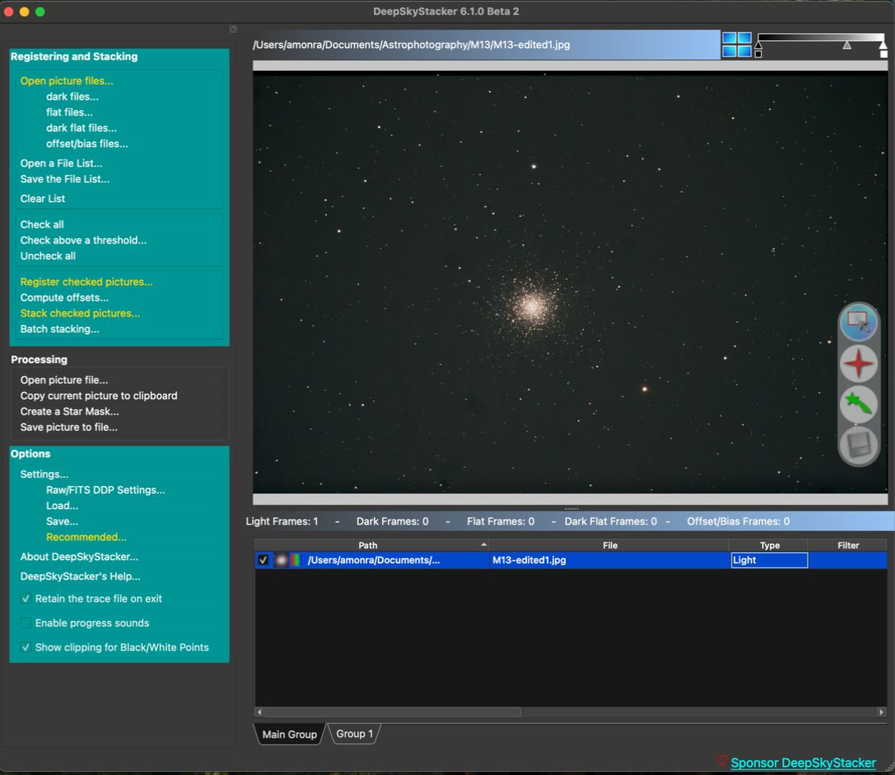 |
Quick Start
You are just out of a busy night and you just have downloaded all
your pictures (lights, darks, offsets and flats) to your PC.
The first step is to add all the pictures (accordingly to their type) to the
list.
To do this you use the commands of the left area:
- add picture files
- add dark files
- add flat files
- add offset/bias files
- add dark flat files
Then you just launch the registering process, you check
the "Stack after registering" box after entering the percentage of pictures
that you wish to keep for the stacking process after the registering process.
If you are using raw files (which is highly
recommended), you just check the Raw DDP settings and you start the registering
process.
You can now go to sleep knowing that after a good night you will view the first
results in the processing tab.
Note that even if your PC crashes after the stacking process, the result is
automatically saved in a special file:
AutoSave.tif.
Registering and Stacking Tab
The Registering and Stacking Tab contains all the
commands and features pertaining to the registering and stacking processes.
From this tab, you can add
frame of each type (light, dark, flat and
offset/bias) to the list, save and restore File Lists, preview images and start the
registering or stacking process
|
It is possible to add files to the list by
simply dragging & dropping them from the file explorer.
The files type will then be asked before
the files are added to the list. |
The right area contains the Pictures List and the
Picture Preview.
On the bottom of the picture list a line of tabs gives access to each file
group. If you click on one group tab the files of the group are shown in the
list.
To know more about the file groups you can consult the technical details
here.
To the top and the right a slider may be use
to change the gamma of the previewed image which may be useful to view faint
objects.
Of course no modification is made to the real image as it is only a
previewing trick.
|
It is possible to automatically launch the stacking process after the
registering process by giving the percentage of light frames that will be kept.
The best pictures, based on the
score
computed by the registering process, will then be stacked. |
|
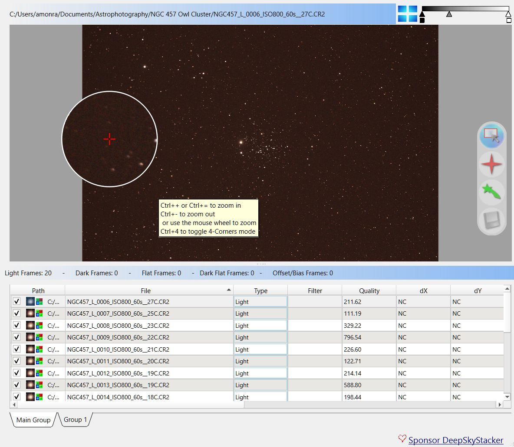 |
The "Compute offsets" feature may be used to compute the offsets and rotation
angles between the pictures without starting the stacking process. Once computed
the dX, dY and angle columns of the pictures list are populated with the
computed offsets and rotation angles.
Note: it is not necessary to
compute the offsets manually prior to the stacking process since the offsets and
rotation
angles are automatically
computed just before the stacking process anyway.
The "Check above a threshold..." may be used to check all the pictures for which
the
score
is greater than or equal to the given threshold value.
|
Before the stacking process a screen
recapitulates the different steps.
It is important to know that the light frames will be automatically
associated with their dark frames using ISO speed and exposure time.
Flat frames and Offset/Bias frames will be automatically associated
regarding only the ISO speed.
In each case the best matching frames will be proposed and a warning will be
issued if ISO speed and/or exposure time are not matching.
|
It is possible to temporarily "force" the ISO speed and
exposure time by using the context menu of the
files. |
From this dialog you can also change the
stacking methods for each type of picture by clicking directly on the link
or on the "Stacking Parameters" button.
|
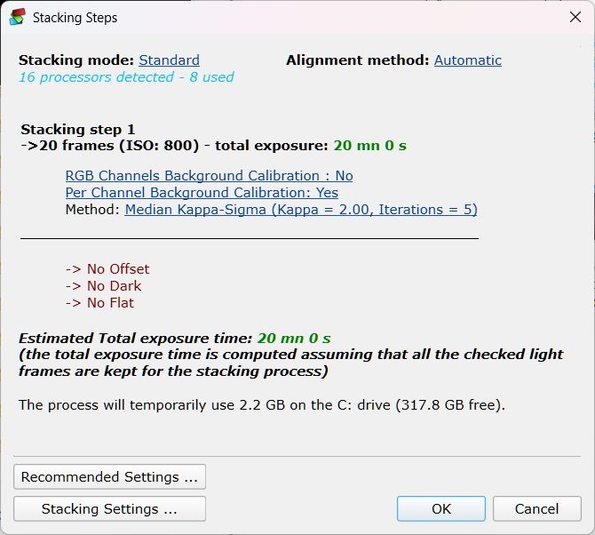 |
A new dialog is then opened, from which you
can modify the folder into which are created the temporary files needed by
the stacking process and all the settings controlling the stacking process. The first tab is used to set the stacking mode
among which the possibility to use a
Custom Rectangle.
You should note that in all modes the offsets are computed from the
reference frame, so it's not a true mosaic mode but a pseudo mosaic.
This is also where you can
choose the Drizzle option
when stacking.
|
The drizzle option
creates image 4 or 9 times bigger.
For already large DSLR images it can create very large images and
DeepSkyStacker may need a lot of memory and disk space to
process them. |
|
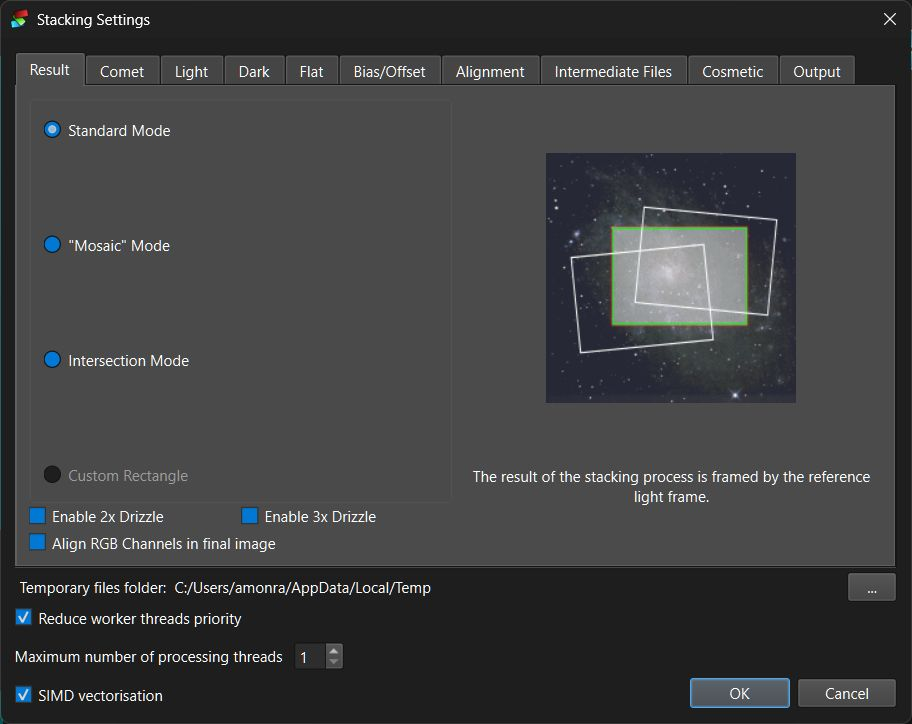 |
|
The other
light, dark, flat and bias tabs are used to modify the stacking method for each type of
frame, and to
activate the background
calibration option for the light frames or the automatic
detection and removal of hot pixels
and bad columns detection and
removal
for the dark frames. |
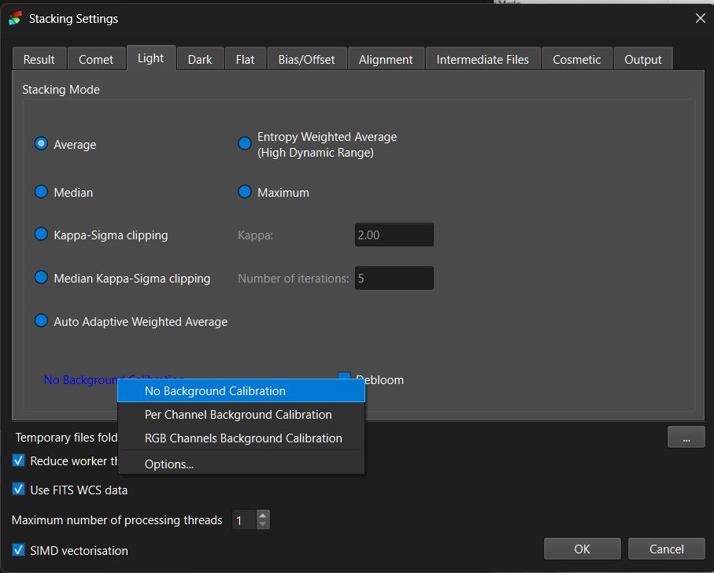 |
The Alignment
tab may be used to change the alignment method used to align light frames.
You can choose Bilinear, Bisquared or Bicubic
transformation or you can DeepSkyStacker select the best transformation
based on the number of available stars. |
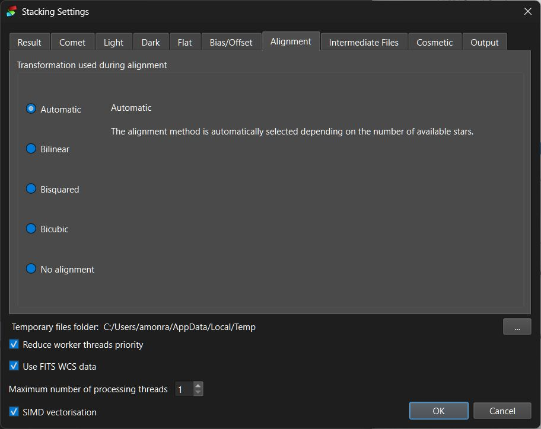 |
|
This tab is used to control the creation
of intermediate files.
Two options may be used to create files
containing intermediate images:
The first option may be use to create a file containing the calibrated image
for each light frame.
The second option may be used to create a file containing the calibrated and registered image for each
light frame.
The created files have the name and location of the matching light frame with
a .cal.tif or .cal.fts extension for the calibrated images and .reg.tif or .reg.fts extension for
the registered and calibrated images.
The files are always uncompressed TIFF or FITS files, monochrome or
color, 8, 16 or 32 bit depending of the light frame bit depth.
|
When you check one of these options be
sure to have enough free hard disk space to host all the created files. |
|
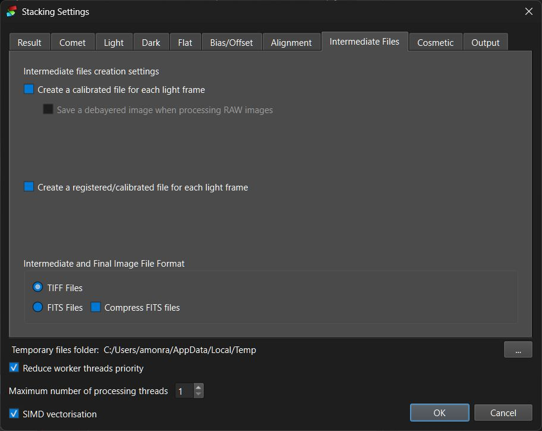 |
|
This
tab is to control the way the calibrated images are cleaned before stacking.
The goal is to detect and clean remaining hot or cold
pixels after calibration.
Checking these options may seriously alter the
resulting image so use them with caution.
Two parameters are needed to define the behavior of the
cosmetic cleaning.
The first parameter is the size of the filter used to
detect and fix the hot/cold pixels. The larger the filter, the longer the
processing time and the smoother the resulting image.
The second parameter is the threshold under which no
correction is done (the pixel value remain the same).
A lower threshold means that more correction are
done.
The last option may be checked to create an image
showing the cleaned pixels for each light frame.
In
this image, cleaned hot pixels are white, cleaned cold pixels are dark
gray and all the other pixels are light gray.
The
created files have the name and location of the matching light frame with
a .cosmetic.tif or .cosmetic.fts extension as defined in the previous tab.
|
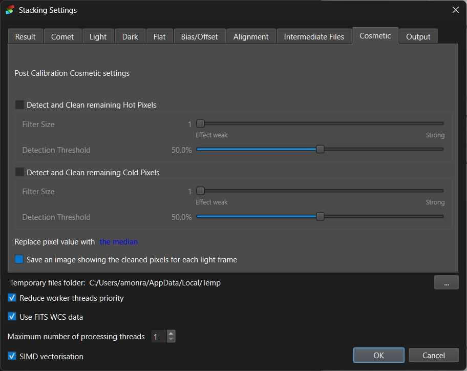 |
|
The Comet tab
is available only when at least two light frames (including the reference
light frame) have a comet registered.
In this case the Comet tab is used to select the comet
stacking mode between the 3 available modes.
See the Comet
Stacking topic in the Technical Details for information on how to use
Comet Stacking. |
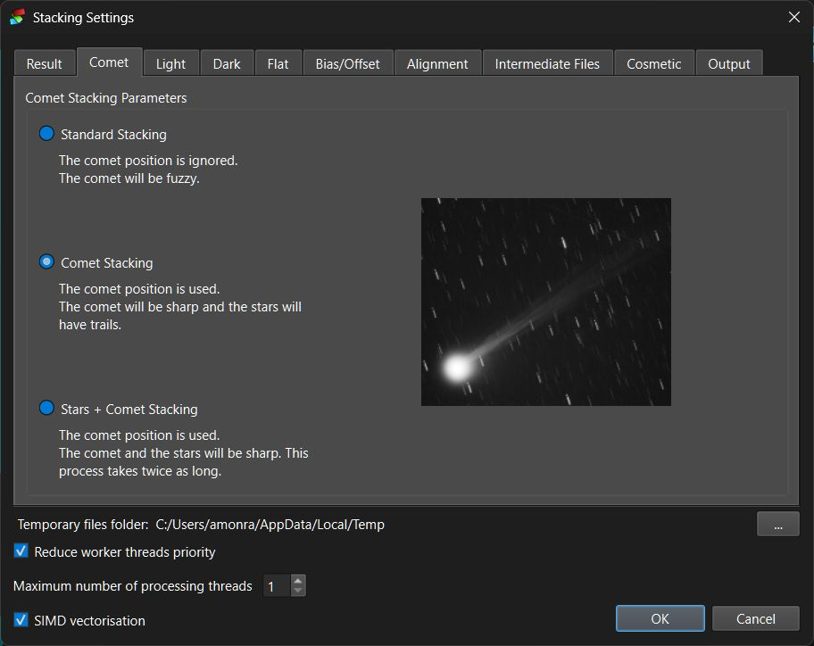 |
After the stacking process, the resulting image is saved in
the AutoSave.tif file which is created in the folder of the reference light
frame..
If an Autosave.tif file already exists in the
folder, an Autosave001.tif (002, 003, ...) is created.
Batch Stacking
The Batch Stacking dialog is used to
create resulting images from more than one stack.
|
For example it may be used to create the resulting
images from the red, green, blue and luminance images without the need to
load each list then start manually the stacking process for each one.
Of course it also may be
used to stack any existing list.
You just need to add the file lists previously
created by the Save File List command to the list.
Each File List that is checked will be
processed.
At the end of the stacking process, the output file
name replaces the list name for each processed file list.
Notes:
|
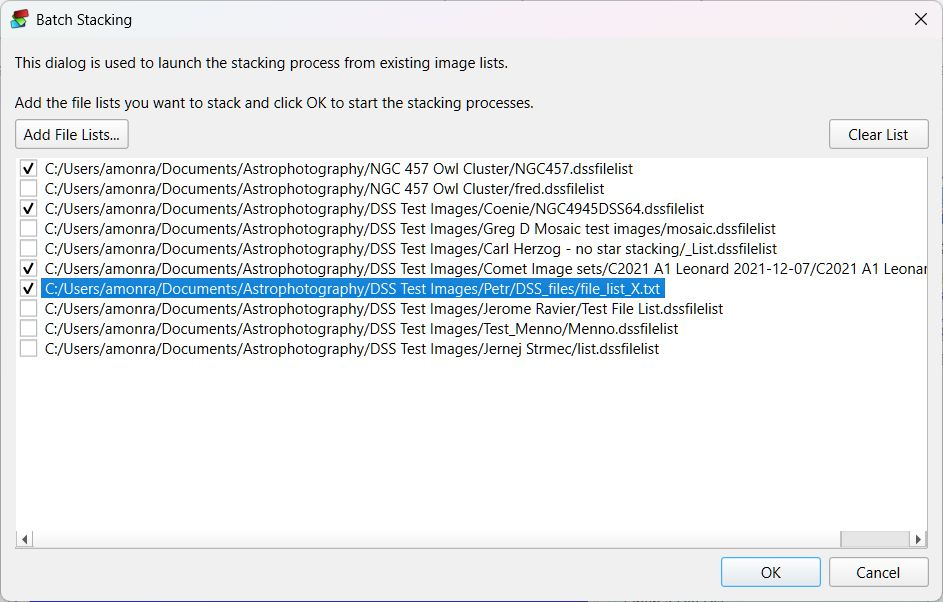 |
Processing Tab
The processing tab contains the commands and features
pertaining to post processing.
|
I would like to emphasise that DeepSkyStacker
only allows a simple stretch and colour balance adjustment of the
image to allow you to visualise the result of the stacking process.
However, if there's no background gradient, it may be possible to achieve
a quite acceptable result using just the tools provided here.
Any complex post
processing should take place in other software specifically designed for
that task.
The processing tab contains a preview of the RGB
histogram, a tab that allows an Inverse Hyperbolic Size (ASinH)
image stretch to be applied, and another tab that allows the Colour
Balance to be adjusted.
If you want to adjust the colour balance, you should
first adjust the stretch parameters and Apply the stretch, then switch to
the Colour Balance tab, make your adjustments and Apply
them.
|
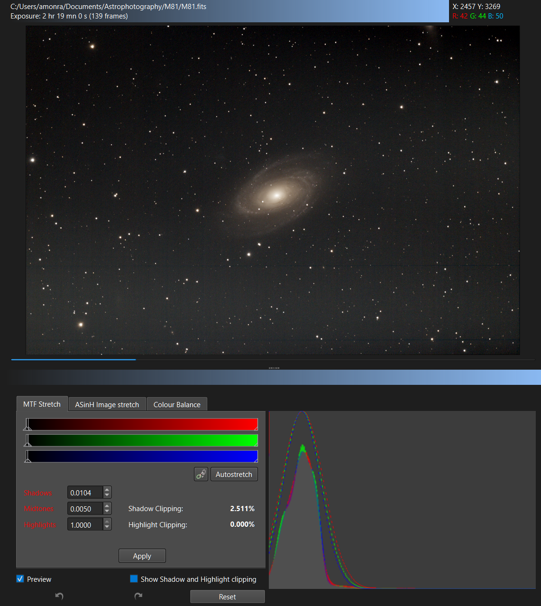 |
The ASinH Transformation or Stretch
|
The ASinH Transformation amplifies the darker
areas of the image. The parameters are the
stretch factor (or beta), the black point value, and whether or not
to use "Human-weighted luminance".
For
monochrome images, pixel values are modified using the following
function:
--------------------------------------------------
original × asinh(stretch)
For color images, the
function becomes:
-------------------------------------------------------
rgb_original
× asinh(stretch)
The stretch factor (otherwise known as beta) can
take values between 0.0 and 1000.0. Larger values result in a
greater degree of image stretching being applied.
The "black point" value has
a range of [00000, 0.20000]. The value of 0.2
implies that the blackpoint is set to 20% of the maximum possible ADU
value. Values below the back point are treated as being
black.
As rgb_original is an average of the three colour
channels, one or two channel values will be greater than rgb_original and
could therefore clip. To mitigate this problem the RGB blend
algorithm (which was developed by the authors of the GHSAstro tool to
adjust the "gain" applied to the channels) is used to ensure
that such clipping does not occur.
When the Human-weighted luminance option is not
ticked, rgb_original is the mean of the three pixel values;
when it is set, the weighting changes to 0.2126 for the red value, 0.7152
for the green value and 0.0722 for the blue value, which gets results
closer to human perceptual color balance.
If the Preview check box is ticked (the default
setting), then adjusting the parameters (by editing the spin box fields
directly, or by selecting the spin box or slider and using the Page-Up
and Page-Down keys for coarse changes, or the cursor up and down keys
for finer changes), then the displayed image and histogram will change to
reflect the parameter changes. However, to actually apply the
changes you need to press the Apply button.
You should note that the stretch is
"multiplicative", so if you Apply a stretch of 200.0, and
then Apply a stretch of 10.0 the effective image stretch is
2000.0. |
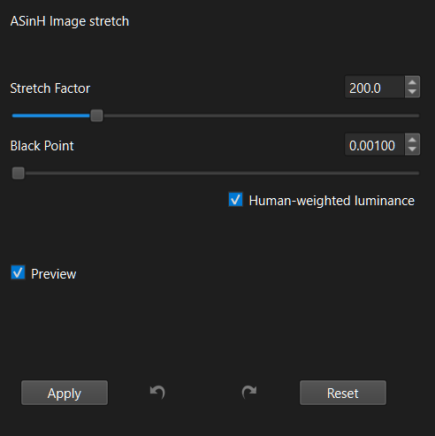 |
RGB
Histogram
|
The RGB histogram allows visualisation of the
distribution of pixel values for each channel (R, G, B) in the image.
In addition, a Gaussian curve for each channel is
drawn on top of the histogram data.
You can use the Colour Balance tab (see below) to
adjust the image colour balance, and that will result in the histogram
being re-drawn.
|
 |
Colour Balance
Adjustment
|
The Colour Balance tab allows adjustment of the image
colour balance. You should make this adjustment after Applying
any image stretch.
If the Preview check box is ticked (the default
setting), then adjusting the parameters (by selecting the
appropriate slider and using the Page-Up and Page-Down keys for
coarse changes, or the cursor keys for finer changes), then the displayed
image and histogram will change to reflect the Colour Balance
changes. However, as with the image stretch, to actually
apply the changes you need to press the Apply button. |
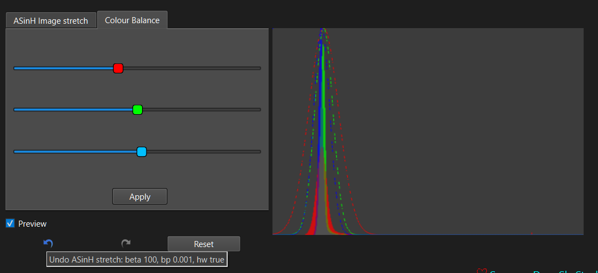 |
Undo/Redo adjustment
parameters
On the bottom
of each tab a set of buttons is available:
- to apply
the last modifications to the picture
- to undo the last
applied modifications
- to redo the last undone
modifications
- to reset all the values
Loading a picture
DeepSkyStacker
can load TIFF images (8, 16 and 32 bit; monochrome or RGB) or FITS
images (8, 16, 32 and 64 bit; monochrome or RGB).
At the
end of the stacking process the image created by the stacking process
is loaded automatically .
Saving the resulting picture
|
DeepSkyStacker can save the resulting image as 16 or
32 bit TIFF or FITS files using two methods:
-
Applying the adjustments: This saves the
image with any changes you have made using the "Apply"
button. You should use this if you plan to do further
adjustments in other software.
-
Not applying the adjustments: This
saves the image without any changes that you have made using
the "Apply" button. You should use this if you plan to
do all post processing in other software.
|
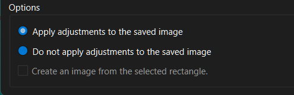 |
For more
information about the saving methods you can read the faq.
Create a Star Mask
Using a Star Mask is often very useful during
post-processing to use different processing techniques for the stars and for the
rest of the image.
The Create a Star Mask feature may be
used to create a variety of star masks that can be used later in any software
you are using to post process (Photoshop, PixInsight, ...).
DeepSkyStacker will only creating star mask files.
It does not use them in any way.
You can
view this feature as a tool intended to provide quickly and simply a star mask
file based on real star detection.
|
What is a star mask?
A star mask is a synthetic grayscale image on which
each bright enough star is replaced by a round white area which is fading
to black following a curve.
You can see an example of a star mask on the
right.
Mouse over the text to see the image or the star mask. |

Star
Field
|
|
Star Mask Creation
To create a Star Mask you must load an image in the
processing tab.
Then just click on the Create Star Mask... menu on
the right and the dialog on the right will open.
From there you can change the shape of the stars in
the mask, the star detection threshold and a few other parameters.
Once you are done, just click on the OK button and
you will be asked to select a file (either a TIFF or a FITS file) in which
the star mask will be saved.
The saved file is always a grayscale 16 bit image. It
is not automatically loaded by DeepSkyStacker.
The star mask is always created from the image as you
see it in DeepSkyStacker which means with the current adjustments
applied. |
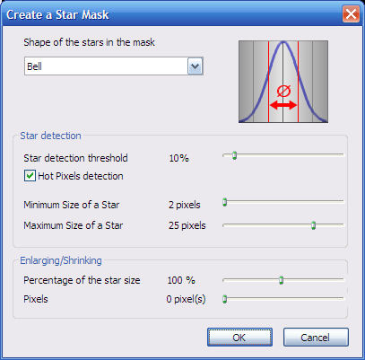 |
The Picture List
The
picture list, common to Registering and Stacking processes contains all the
pictures used by the registering and stacking processes.
- Light frames
- Dark frames
- Flat frames
- bias/offsets
frames
Only the checked
pictures are used by the registering and stacking processes.
The list contains the following
columns:
| Checkbox |
checked if the picture should be
used |
| Path |
Path to the picture file |
| File |
Name of the picture file |
| Type |
Picture type:
Light
Dark
Flat
Dark Flat
Bias |
| Score |
Picture score computed by the registering
process or
N/A for dark, flat and bias/offsets
frames.
When you have selected a frame as the
reference frame using the context menu, the score is preceded by
(*). |
| dX |
X offset (in pixels) computed for the stacking
process |
| dY |
Y offset (in pixels) computed for the
stacking process |
| Angle |
Rotation angle (in °) computed for the stacking
process |
| Date/Time |
Date and Time of the file |
| Size |
Size of the picture in pixel (Width x
Height) |
| CFA |
Yes if the picture is resulting from a
Color Filter Array (CFA) which is the case of all the RAW pictures using
a Bayer matrix. |
| Depth |
Type (gray levels or RGB) and number of bits per
channel of the picture. |
| Infos |
Extra information about the picture (RAW
with DSLR information, TIFF or Other) |
| ISO Speed |
ISO Speed of the picture |
| Exposure |
Exposure time of the picture |
| FWHM |
FWHM: Full Width Half Maximum value. (in pixel)
This is the average for all the detected
stars |
| #Stars |
Number of detected stars.
When a comet position is set a +(C) is appended to
the number of stars |
| Sky Background |
Sky background value for registered image
in % |
You can
sort the list on any column by clicking on the column header (and by clicking
again to reverse the sort order).
You can change the columns order and each column width.
Everything is saved after each use of DeepSkyStacker. The column widths order
will be reloaded the next time DeepSkyStacker is used.
You can preview a picture from the
list by selecting it.
If the selected picture is a RAW
file, the RAW DDP settings will be used to decode the RAW file before previewing
it.
|
You can
select multiple files in the list.
A context menu is available (mouse right button) to
manually select the reference frame of the stack, change the file type,
check or uncheck the files, remove the files from the picture list or
view, edit the properties of the files copy the list content to the
clipboard or definitively erase files from the disk.
|
If
you select a reference frame that is not checked, the offsets will
be computed from this reference frame even if the reference frame
will not be stacked. |
|
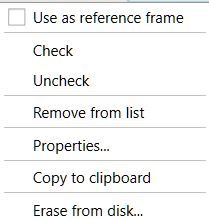
|
|
The properties dialog may be used to change the
picture type, and temporarily (only for the current session) the ISO speed
and exposure time of one or more pictures.
When changing the ISO speed and exposure time, no
change is made to the real files. The values are only stored in memory for
the duration of the current session. |
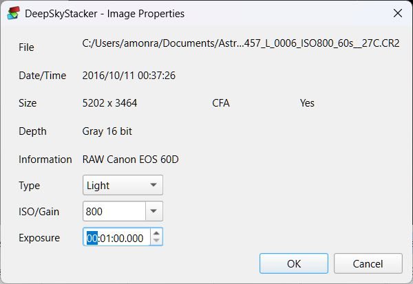 |
Picture Preview
The
picture preview is used to quickly view a picture from the picture list
(Registering and Stacking Tabs) or to view the picture being processed
(Processing Tab).
You can zoom
in and zoom out by pointing the mouse and using the wheel. This is the only way
to pan and to zoom.
Star and Comet editing
|
When a light frame is selected in the registering and
stacking tab it is possible:
-
To edit the star positions:
Stars detected by DeepSkyStacker will be coloured green. You
can select extra stars or deselect the ones DeepSkyStacker detected by
left clicking with the mouse.
-
To edit the comet position
-
You can select one of the above modes using the
toolbar in the bottom right corner of the image.
The last item of the toolbar is used to save the
changes.
|
Comet
editing note:
The comet center may not
be automatically detected by DeepSkyStacker.
To force the comet
to a given position hold down the Shift key while positioning the comet
center. | |

|
|
When used from the processing tab, the picture
preview may be used to select a part of the image by drawing a rectangle
directly on the picture.
This rectangle is used on one hand to apply the
adjustments only to this rectangle and on the other hand, optionally, to
save only a part of the image.
If no rectangle is defined the adjustments are
applied to the full image.
In all the cases, when the image is saved to disk the
adjustments are applied to the full image.
|

|
DDP (Digital Development Process) settings
The
DDP settings dialog gives access to all the parameters used while developing
a image file to transform it into a picture.
|
Image Adjustment (or
Colour Adjustment)
The parameters are:
Image Adjustment (or Color Adjustment) is
applied after the image has been read and scaled appropriately for the
type of image (Raw, FITS or TIFF), and after all calibration frames have
been applied. If you use these adjustments, as you increase
the values beyond the default value of 1.0, more and more pixels will
become saturated.
The brightness (or luminance) adjustment applies
equally to all three channels. The values for the Red and Blue scale factors are relative to the Green channel whose scale factor
is the brightness value.
If you wish to scale 12 bit TIFF or FITS files to 16
bits, then this can be done by setting a brightness value of 16.
This can also be useful if
you want to set the channel balance for FITS or CFA format TIFF files
based on the documentation for your camera. |
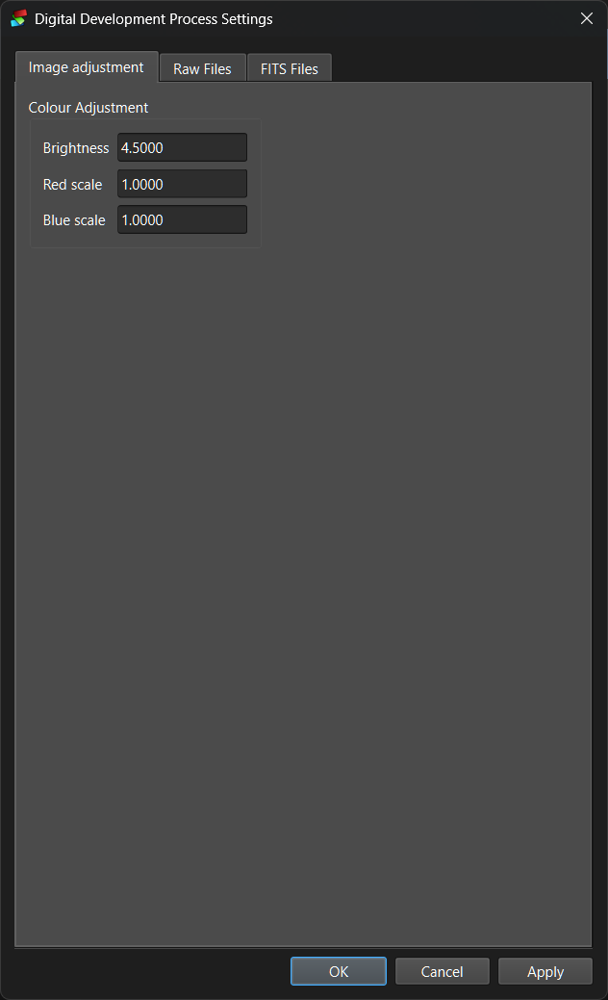 |
|
RAW Files
The parameters are:
-
White balance
-
Interpolation mode
By
default DeepSkyStacker will use Daylight White Balance, unless either "No
White Balance Processing" or "Use Camera White Balance" is selected. If you
select "No White Balance Processing", then no white balance scaling is
performed at all, which is desirable if you are using software such as
StarTools to post process your stacked images.
In most other cases we recommend that you use
Daylight White Balance.
The option to choose Use Auto White Balance is no
longer supported because it resulted in each frame getting its own unique
white balance which messed up dark and flat frame processing. However, if
you really want to use Auto White Balance, set your camera to Auto White
Balance and select "Use Camera White Balance".
The
white balance adjustment values are extracted from the RAW files by LibRaw
Copyright © 2008-2019 LibRaw LLC. LibRaw is based upon the original DCRaw
decoder for RAW files written by Dave Coffin.
More
information about the interpolation mode and the specific behavior of the
Bayer matrix optimization, is available in the technical details
.
|
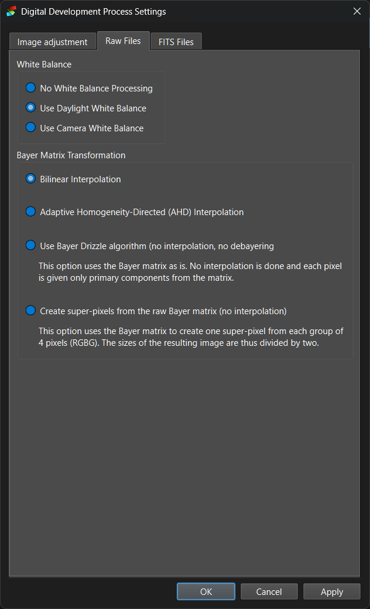 |
|
FITS Files
If the check box "Single plane 16 bit FITS
files are from ..." is not
selected, DeepSkyStacker will attempt to use automatic detection
of the CFA matrix based upon FITS keywords such as BAYERPAT,
COLORTYP, and MOSAIC (for Meade DSI colour cameras). If the
FITS file doesn't contain these keywords or the incorrect pattern is
specified in the file, you may select the check box and choose the
camera/pattern to be used as in earlier releases of DeepSkyStacker.
The first step is to select the DSLR or the CCD
camera used to take the images from the list. This is necessary to use the
correct Bayer Filter Pattern that will be used to decode the image
transforming them from B&W to color images.
The settings control the values used for:
- FITS DATAMIN and DATAMAX values
- interpolation mode
More information about the interpolation mode and the
specific behavior of the Bayer matrix optimization is available in the technical details.
|
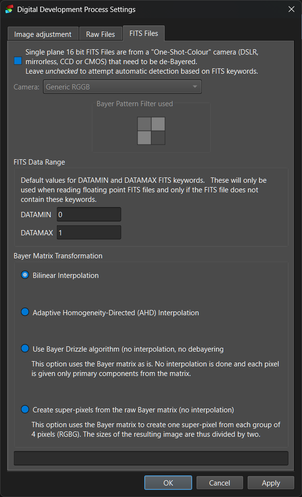 |